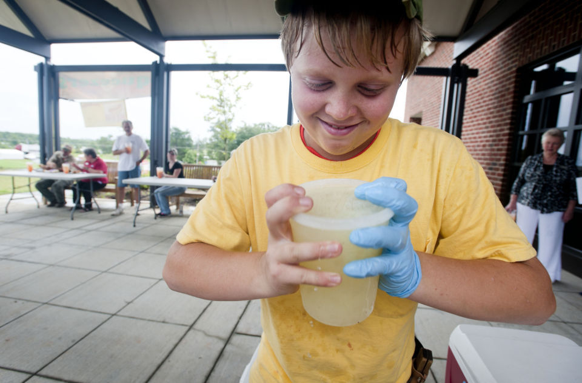
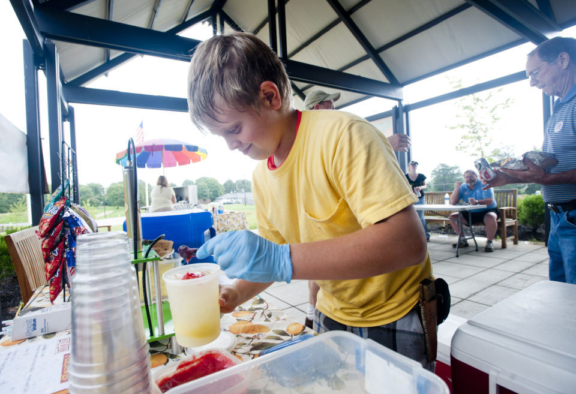
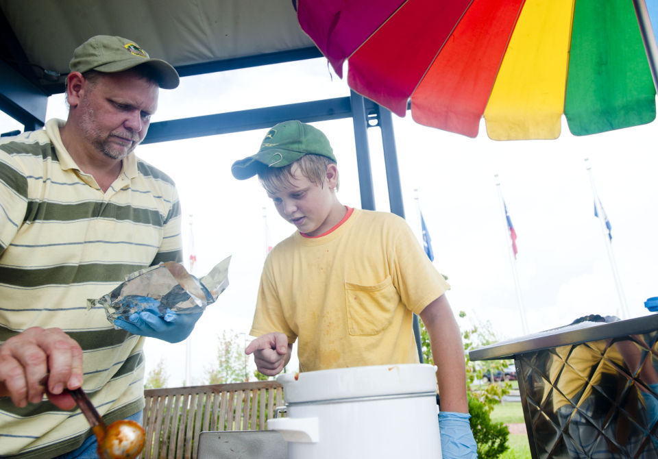

Text B
A 13-Year-Old Entrepreneur
Katrina Koerting
1 Five people waited patiently on the benches outside of the Museum of the Confederacy in Appomattox while Parker Maroney, 13, whipped back and forth on the patio preparing his signature fresh strawberry and regular lemonade drinks, called squeezers.
Parker Maroney, 13, shakes up his lemonade at his hot dog stand he set up outside of the Museum of the Confederacy to save money for college. (Photo: Jill Nance)
2 "We're waiting for that," Linda Lipscomb, the site manager for the museum, said nodding toward Parker's table where he busily squeezed lemons, adding strawberry puree, ice and lemonade. "It's my favorite."
3 In just his second week of selling hot dogs, squeezers, chips and drinks at the museum to save money for college, Parker, who lives in Spout Springs, already has developed a fan base among the museum's employees and guests.
4 "This is the best lemonade I've ever had," one woman remarked as she and her husband finished their lunch and headed into the museum.
5 Parker said it's been really cool to see his customers' reactions.
6 "I'm glad people are liking the lemonade," he said. "It took a right long time to come up with the recipe."
7 He is expected to be at the museum every Wednesday beginning at about noon throughout the summer. He will be there some Tuesdays, Fridays and Sundays as well. Summers are his busiest time since he is in school the rest of the year.
8 Parker got the museum gig by responding to an email asking Appomattox schools, teams and other groups if they wanted to sell drinks and other things at the museum to supplement the lack of vending machines. He presented his business model, insurance and health license to museum staff and began selling shortly after.
9 Since the museum requires an adult be present, one or both of his parents have helped him with the hot dogs while Parker interacts with customers and creates his specialty drinks. Both are supportive of their son, making it clear this is his operation, and he calls the shots.
Parker Maroney, 13, serves up his lemonade at his hotdog stand he set up outside of the Museum of the Confederacy to save money for college. (Photo: Jill Nance)
10 "I love working with him," his father, Joe Maroney, said. "To see him change and try to mentor him, because he'll actually ask for advice, is a great plus."
11 Entrepreneurship runs in the family. While growing up, Joe Maroney used to have lemonade stands and mowed lawns. He said he is happy to help his son earn money for college to avoid debt.
12 "He's a great kid," he said. "I want to give him the skills to be able to be productive in life, to be self-sufficient."
13 Parker began his business venture, PeaDawgs, in 2009 as a part of his parents' real estate company. Since then he has worked 40 festivals and will sometimes set up at DeVault Family Vineyards where he'll be this weekend for the watermelon festival.
14 A bulk of his sales go into buying more supplies for the bigger festivals, but he's already managed to save enough for two years or so of college, depending on where he goes. He hopes to go to Virginia Tech and major in forensic science.
15 The inspiration for starting his business came in several ways. He always enjoyed attending festivals with his parents and, a few years ago on his way to 4-H, he noticed a hot dog cart by the road for sale. Shortly after, he and his dad decided they needed to sell something else, and Parker decided to try his hand at lemonade.
16 "It was a fun learning process," he said.
17 Through his business venture, Parker's learned how to handle money and food as well as the importance of prepping the night before a festival. He attended a health class in Lynchburg to learn about proper food care. And he's gotten help from various folks in the restaurant and food cart business.
18 The hardest part has been staying organized and ensuring he has all the necessary supplies. Festivals can be stressful due to the amount of work—inventory, cleaning, shopping, sanitizing and setting up.
19 However, he said it's all worth it in the end.
20 "It's fun," Parker said. "You get to meet people and give them good food and lemonade."
21 The reception has been very positive at the museum.
22 "We really enjoy him being here," said Jim Lipscomb, a museum re-enactor.
23 He said he is struck by the professionalism Parker has shown while there. He was impressed Parker is working while other children his age prefer watching television or playing video games.
24 "This young man shows a lot of initiative," he said.
Parker Maroney and his dad Joe serve customers hotdogs and lemonade at his stand set up at the Museum of the Confederacy. Maroney is selling the food to raise money for college. (Photo: Jill Nance)
25 Linda Lipscomb, considers the partnership to be mutually beneficial since Parker can save for school and the visitors don't have to leave to grab something to eat or drink.
26 "Parker is a very nice young man, and we wanted to encourage him in his efforts to save his money," she said. "He's doing it for a worthy cause, and you don't see that often."
27 She first met Parker during his business presentation to sell at the museum and has continued to be wowed by his courteous personality and manners.
28 "Wednesdays are now PeaDawg days around here," she said.